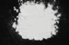

|
|
(For further information on spectroscopy, see:
http://speclab.cr.usgs.gov)
TITLE: Beryl GDS9 DESCRIPT
DOCUMENTATION_FORMAT: MINERAL
SAMPLE_ID: GDS9
MINERAL_TYPE: Cyclosilicate
MINERAL: Beryl
FORMULA: Be3Al2Si6O18
FORMULA_HTML: Be3Al2Si6O18
COLLECTION_LOCALITY: Maine, USA
ORIGINAL_DONOR: Wards Natural Science Collection
CURRENT_SAMPLE_LOCATION: USGS Denver Spectroscopy Laboratory
ULTIMATE_SAMPLE_LOCATION: USGS Denver Spectroscopy Laboratory
SAMPLE_DESCRIPTION:
None
IMAGE_OF_SAMPLE:

END_SAMPLE_DESCRIPTION.
XRD_ANALYSIS:
Beryl + trace other (Norma Vergo).
END_XRD_ANALYSIS.
COMPOSITIONAL_ANALYSIS_TYPE: None # XRF, EM(WDS), ICP(Trace), WChem
COMPOSITION_TRACE: None
COMPOSITION_DISCUSSION:
None
END_COMPOSITION_DISCUSSION.
MICROSCOPIC_EXAMINATION:
Bimodal grains size distribution:
population 1 140µm 97 vol%
population 2 15µm 3 vol%
avg. grain size of populations = 138µm
Conchoidally fractured grains, trace of opaque material, length fast, uniaxial (-). Smaller grains slightly adhere to larger grains. G. Swayze.
END_MICROSCOPIC_EXAMINATION.
SPECTROSCOPIC_DISCUSSION:
END_SPECTROSCOPIC_DISCUSSION.
SPECTRAL_PURITY: 1b2b3b4b # 1= 0.2-3, 2= 1.5-6, 3= 6-25, 4= 20-150 microns
| LIB_SPECTRA_HED: | where | Wave Range | Av_Rs_Pwr | Comment |
|---|---|---|---|---|
| LIB_SPECTRA: | splib04a r 666 | 0.2-3.0µm | 200 | g.s.= 138 µm |
| LIB_SPECTRA: | splib05a r 1318 | 0.2-3.0µm | 200 | g.s.= |
| LIB_SPECTRA: | splib06a r 3476 | g.s.= | ||
| LIB_SPECTRA: | splib06a r 3488 | g.s.= |
{kind=link}